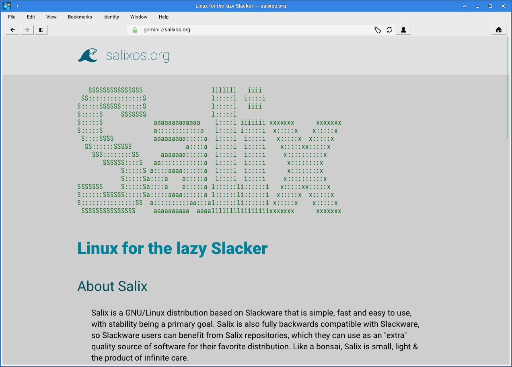

Salix is on Gemini
We now have our own capsule on Gemini!
But what is Gemini and what is a capsule? Gemini is a lightweight, text-based protocol for sharing content on the internet. It’s designed to be simple and efficient. It’s similar to the http(s) protocol, but with many restrictions that limit its functionality. These restrictions were included in the Gemini protocol on purpose, so there’s no chance that the Geminispace (the collection of all Gemini pages) will ever become the mess that the modern web is. There’s no way to run JavaScript on Gemini. There’s no tracking on Gemini. And there are no annoying ads in Gemini.
A capsule is simply what a page is called in Gemini. The equivalent to what a webpage is in the web.
Gemini is relatively new, created only a few years ago. It’s part of what’s often referred to as “the small internet”. This term describes a collection of alternative, decentralized, and community-driven networks that operate outside of the mainstream internet.
Gemini is text-only. It’s possible to include images and videos, or any other type of file, but it’s up to the client to decide what to do with them. If it will display them in place, like a web browser displays images, or if it will only show the text and provide links for images and videos so that users can download them individually to view them.
There’s also no page styling in Gemini. The author doesn’t decide how the content will look, as it happens in the web. The author only provides the content, and the only one who gets to decide how that information is presented is the client application, which in most cases can be configured by the user. There are many terminal-based clients, but there are also graphical clients.
Gemini is never going to be the next big thing. It’s never going to replace the web; it’s not meant to do that anyway. Gemini is never going to be supported by big corporations. It’s never going to be supported by anyone who cares about things like user conversion and retention. And that’s a good thing.
The pace in Gemini is a lot slower than on the web. There are no constant updates, no endless scrolling, no instant gratification.
All that aligns a lot with how we like to do things in Salix. We don’t have a fancy website, because we don’t want to. There’s no JavaScript, no tracking, no attention-grabbing animations. Our main page is mostly text-based, with the absolute minimum of styling that we could get away with. We haven’t updated its look since 2013. Salix is boring and stable. We don’t move fast, and we don’t like to break things. Our blog gets a few updates a year.
It wasn’t that hard to convert our current main page content to Gemini. We used a tool to convert the content to the format required by Gemini. This tool is now abandoned by its developer, but it still works. It wasn’t that hard to include all our blog content either. I have also set it up so that any new content that is added to the blog, like this article, can be easily mirrored to our capsule within seconds. It’s all there under “Posts”. All scripts and content of our Gemini capsule can be found in the respective Github project page.
Why do it now? Simply because I had some spare time, and it was a fun thing to do. If you look into the Git commit logs, you’ll see that I started this about a year ago but never got to publish it until now.
We already have a couple of Gemini clients (browsers) in our repositories. If you want a terminal-based client, you can use Amfora. If you want a more feature-complete client, with the ability to display images inline and other cool features, you can use Lagrange. In fact, I upgraded the Lagrange package in our repositories to the latest release earlier today. There are a few more clients available in Flathub that you can also try, and there are many more if you don’t mind compiling from source.
I would be very surprised if more than a handful of people accessed our Gemini capsule. And that’s OK.
Here’s a screenshot of Lagrange, mostly with default configuration, showing our capsule:
